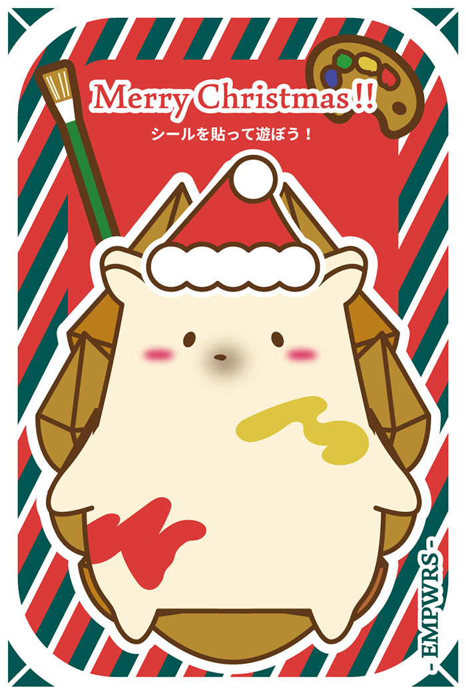
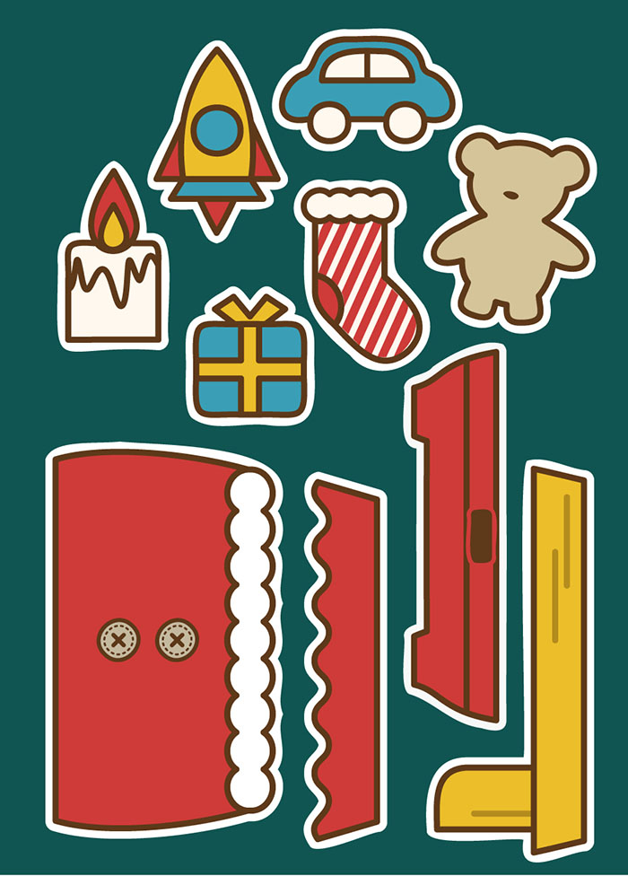

ポストカード・ステッカーデザイン
同学科の学生が立ち上げたプロジェクト「大学アパレルブランドEMPWRS」が、2024年12月21日～12月22の2日間、イオンモール香椎浜のかしいいーなてらす かけはし広場にで開催されたクリスマスミニマーケットにハンドメイド・ワークショップ「九産大アパレルグループEMPWRS」で出店することになりました。
その出店で商品として販売するクリスマスカードとステッカーをデザインしました。


クライアント
---
担当した作業
---
制作期間
2024.11.10 - 12.1
使用したソフトなど
Adobe Illustrator
注意・工夫した点
ターゲットを「子供」に絞ったので、遊び心を入れたく、カラフルな色合いにすることを心がけました。また、発注の際にステッカーの素材も透けたりしない素材を選ぶことに気をつけました。
課題
ステッカーを印刷会社に発注する時にアウトライン化をしていなかったり、アンカーが多すぎたりなどで試行錯誤しながら訂正をする必要がありました。デザインが完成してから発注までの期間が短くバタバタしたので、スケジュールに余裕を持つことが大切だと改めて感じました。